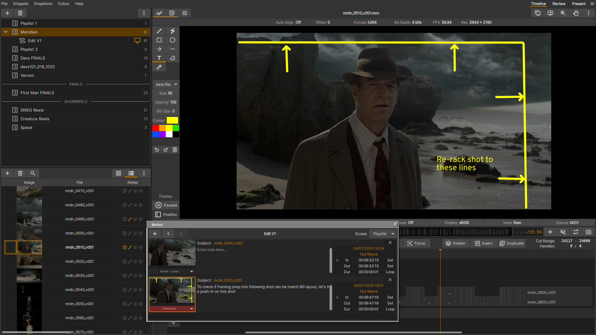
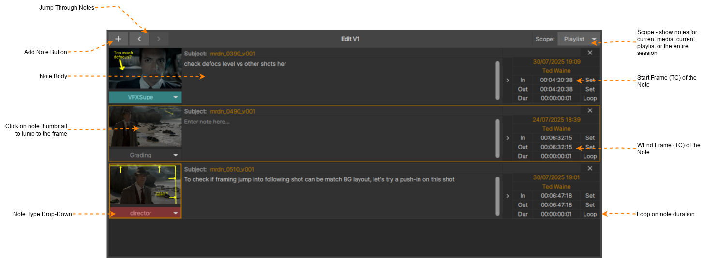
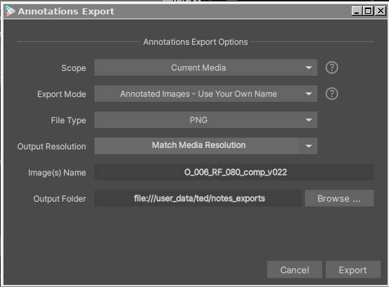

Notes and Annotations
{kind=link}

xSTUDIO Annotations in Action
xSTUDIO の Notes 機能を使用すると、テキストコメントや画面上のスケッチをメディアに素早く簡単にタグ付けできます。これにより、ユーザーは同僚とテキストや視覚的なフィードバックを記録・共有したり、自分用にアノテーションを追加したりすることができます。
Notes は、Media 項目の気になるフレームやフレーム範囲をマークするための空のブックマークとしても便利です。レビュー中に、Notes パネルをショートカットツールとして使用し、これらのフレーム間をジャンプしたりループ再生したりすることができます。
{kind=link}

The Notes panel
Adding a Note
Media 項目の任意のフレームに Note を作成する方法は 3 つあります。Note は常に、画面上に表示されているメディアの現在の（画面上の）フレームに追加されます：
「;」キーを押すと、現在のフレームに即座に空の Note が作成されます。
「N」ホットキーを押すか（または Viewer の左上にある Notes ボタンをクリックして）、Notes インターフェースを表示します。Notes インターフェースにある「Add Note」ボタンをクリックします。
「D」ホットキーを押して Annotation Tool のツールボックスを表示します。Viewer 内の画像の上にストロークやシェイプを描画し始めると、そのフレームに Note が自動的に作成されます。
画面上のスケッチは、常に特定のフレームの現在の Note に紐付けられます。スケッチの作成を開始したときに Note が存在しない場合は、空の Note が自動的に作成されます。
Modifying a Note
Notes インターフェースの Note 内に、Notes のテキストコンテンツを直接入力します。
「subject」ボックスをクリックして、Note の件名/タイトルを変更します。
In/Out ポイントの「set」ボタンを使用して、Note のデュレーションを延長したり、メディアのフレーム範囲内での位置を移動したりします。
ドロップダウンから Note のカテゴリーを選択できます。ドロップダウンに表示されるカテゴリーは設定可能です（Preferences に関する付録のセクションを参照してください）。
Note を削除するには、Note を右クリックして「Remove Note」を選択するか、Note エントリの右上にある「X」ボタンをクリックします。
Drawing Annotations
Drawing Tools ボックスは、「D」ホットキーを押すか、Viewer の左上にあるペンアイコンのボタンをクリックすることで表示または非表示にできます。xSTUDIO の描画ツールは簡単に使いこなすことができます。Viewer 上に直接ストローク、シェイプ、またはテキストキャプションを描画し始めるだけです。前述のように、新しいアノテーションを作成すると常に「Note」が作成されます。
描画は（ラスタライズされたピクセルではなく）「ベクターベース」であり、グラフィックスカードによって「オンザフライ」でレンダリングされます。Viewport をズームイン・ズームアウトしても、ブラシストロークは常にピクセル化（ジャギー）することなくレンダリングされます。描画は画像の境界線の外側まで拡張できるため、必要に応じて画像の横や上下のスペースにスケッチを自由に追加できます。
ペンタブレットのような筆圧感知入力デバイスを使用する場合、フリーハンドのブラシツールはペンの圧力に反応します。Drawing Tools ボックスには、この挙動を調整するためのいくつかのコントロールが用意されています。Softness はブラシのエッジの硬さを設定し、鮮明な輪郭から柔らかくぼかした（フェザー）ストロークまで変化させます。Size Pressure Sensitivity は、ストロークの幅がペンの圧力にどれだけ強く反応するかをコントロールします。ゼロに設定するとストロークは一定の幅を維持し、値を大きくすると、軽い圧力では細い線が、強い圧力では設定されたブラシサイズを上限とする太い線が描かれます。Opacity Pressure Sensitivity もストロークの不透明度に対して同様に機能し、軽いストロークで徐々に色を重ねたり、強い圧力で完全に不透明なマークを描いたりすることができます。
「Laser」フリーハンド描画モードを使用すると、数秒かけて消えるまでフェードアウトする、一時的なストロークを描くことができます。これは、レビューに同席している同僚に画像の一部分を強調して示す際に、ストロークを何度も消去したりUndoする必要がないため便利です。
テキストキャプションを入力するには、「Text」ツールを選択し、Viewport 内をクリックしてキャプションを配置してからタイピングを開始します。キャプションボックスの角にあるハンドルを使用すると、ボックスを移動およびスケールできます。テキストキャプションは、テキストの入力中および入力後に、配置、サイズ変更、色変更、スケールを行うことができます。
「Dodge」および「Burn」ツールを使用すると、画像の上をペイントすることで、その領域を局所的に明るくしたり暗くしたりできます。これらはフリーハンドブラシのように動作しますが、色を塗るのではなく、その下にあるピクセルを変化させます。これらのツールは筆圧を感知しません。各ストロークが一定の量を適用し、その効果は累積されるため、同じ領域に何度もブラシを重ねると、効果が段階的に強くなります。Intensity スライダーは、各ストロークが画像に与える影響の大きさをコントロールします。低い値では徐々に重ねやすい繊細な効果になり、高い値では1回のパスで強力な変化をもたらします。Add および Mult ボタンは、純粋な黒に対して調整をどのように適用するかを選択します。Add モードではストロークの値が下層のピクセルに加算されるため、シャドウが持ち上がり、完全に黒い領域でも効果を確認できます。Mult モードではストロークの値が下層のピクセルに乗算されるため、純粋な黒は黒のまま維持され、画像にすでに存在する明るさに比例して効果がスケールします。
Note
アノテーションを描画する際、画像からペンストローク用の色をピックできます。デフォルトのショートカットキー「V」を使用してカラーピッカーをアクティブにし、画像上をクリックしてから、新しい色で描画を続けます。ピッカーは、ポインターの下にあるピクセルの色を取得するか、（マウスボタンを押し下げた状態で）ポインターを領域内でドラッグしたときに平均ピクセル値を計算するように設定できます。
Exporting Annotations
アノテーションを単一の画像または画像セットとしてエクスポートするには、File -> Export メニューに移動し、「Annotations …」オプションを選択してアノテーションエクスポートウィザードを開きます。また、アノテーションを Grease Pencil パッケージとしてエクスポートし、Blender、Maya、3DS-Max、または同フォーマットをサポートするその他のアプリケーションにインポートするオプションもあります。これにより、xSTUDIO で描画した内容を 3D アプリケーションに読み込み、3D Viewport 内でアニメーションの Notes を視覚化できるようになります。
{kind=link}

Annotations エクスポートウィザード
このウィザードには、アノテーションを簡単にエクスポートするためのいくつかのオプションが用意されています：
Scope: ここに用意されているオプションの説明を表示するには、(?) マークのアイコンにマウスカーソルを合わせます。
Export Mode: ここに用意されているオプションの説明を表示するには、(?) マークのアイコンにマウスカーソルを合わせます。
File Type: エクスポートする画像のファイルタイプを選択します。オプションは PNG、JPG、TIFF です。
Output Resolution: エクスポートする画像の解像度を選択します。
Image(s) name: エクスポートする単一または複数の画像、あるいは Grease Pencil パッケージの名前を設定します (エクスポートモードによって異なります)。
Output Folder: エクスポートする単一または複数の画像、あるいは Grease Pencil パッケージのファイルシステム上の保存先を設定します (エクスポートモードによって異なります)。
Exporting Notes CSV with Annotations
Notes を CSV ファイルとしてエクスポートするには、File -> Export メニューに移動し、「Notes …」オプションを選択します。ファイルダイアログが開くので、エクスポートする CSV ファイルの保存先と名前を選択します。エクスポートされた CSV ファイルには、Note の件名、テキストコンテンツ、カテゴリー、In/Out フレーム範囲（タイムコード形式）、Note が添付されているメディアのファイルパス、対応する Note フレームのメディアのスクリーンキャプチャである JPEG 画像へのパス、および Notes 自体の本文の列が含まれます。エクスポート処理の一部として、（.csv ファイル名から拡張子を除いた名前を使用して）フォルダーも作成されます。すべての Note（描き込まれたアノテーションを含む）に対して、対応するメディアフレームの JPEG 画像がこのフォルダー内にレンダリングされます。